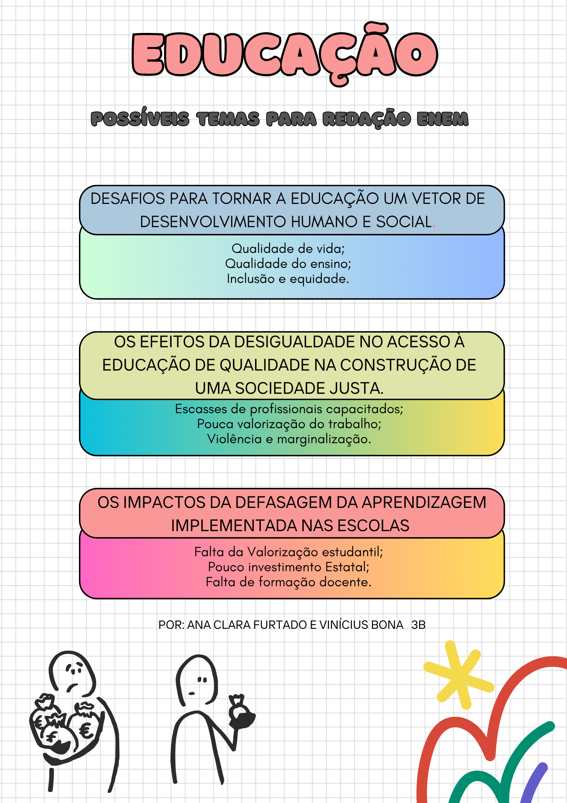

Educação
Sugestão de argumentos Argumento de autoridade "De acordo com o Relatório de Desenvolvimento Humano, países com maiores índices de educação tendem a ter maiores níveis de desenvolvimento humano, expectativa de vida, renda e qualidade de vida." Argumento histórico "Os estudos são a base da sociedade humana. Sem eles, independente da época, não teríamos absolutamente nada do que temos hoje. Graças aos estudos feitos ao longo da história, fomos capazes de construir foguetes, celulares e muito mais." Argumento de exemplificação "O sistema educacional finlandês é baseado em princípios que priorizam a igualdade de oportunidades, a qualidade do ensino e o bem-estar dos alunos. Lá, os professores têm autonomia para ensinar de formas diferentes e práticas." Argumento de comparação "Enquanto a Coreia do Sul investe muito na melhoria da educação, na formação dos professores e em novas formas de ensino, o Brasil ainda enfrenta problemas como salários baixos, escolas precárias e políticas ineficientes." Argumento de raciocínio lógico "A falta de investimentos na educação e a desvalorização dos professores levam diretamente à baixa qualidade do ensino. Sem boa infraestrutura e salários adequados, o aprendizado é prejudicado, o que limita o acesso dos jovens ao mercado de trabalho e amplia a desigualdade social." Argumento contextual (atualidade + sociocultural) "No século XXI, a educação brasileira enfrenta desafios como globalização, avanço tecnológico e a busca por equidade, agravados pela desigualdade social."